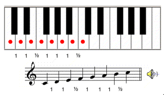
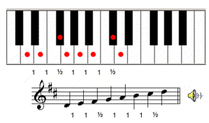

Tonos y semitonos en las escalas
El siguiente orden de tonos y semitonos es propio a la escala mayor
Podemos construir una escala mayor comenzando sobre cualquier nota, siempre y cuando mantengamos el mismo orden de tonos y semitonos. A continuación, pueden ver otra escala mayor pero esta vez comenzando en re. Noten que debemos añadir un sostenido a las notas fa y do para mantener el mismo orden de tonos y semitonos. Decimos que esta es la escala de re mayor:
